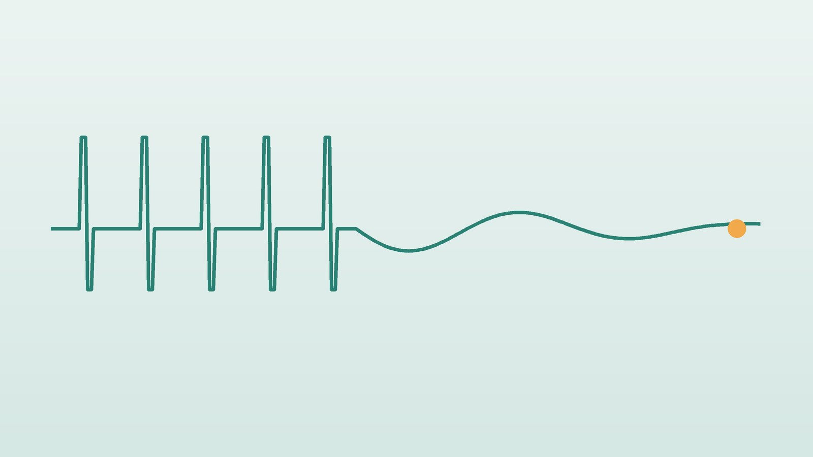

건강 칼럼 · 인천 자율신경실조증 한의원
검사는 정상인데 온몸이 불편하다면, 자율신경실조증 한방 관리

이런 증상이 번갈아 나타나나요?
- 가만히 있어도 가슴이 두근거리고 숨이 얕다
- 손발은 차가운데 얼굴은 화끈거린다
- 식사 후 더부룩하고 변이 들쭉날쭉하다
- 긴장하면 손에 땀이 흥건하다
- 일어설 때 어지럽고 쉽게 지친다
- 여러 병원에서 검사했지만 '이상 없음'이라는 말을 들었다
이 체크리스트는 진단 도구가 아니라 상담이 필요한지 가늠해 보는 참고용입니다.
자율신경은 어떤 일을 하나요?
자율신경은 심장 박동, 혈압, 호흡, 소화, 체온, 땀처럼 우리가 의식하지 않아도 저절로 움직이는 기능을 조절합니다. 낮에 활동할 때는 교감신경이, 쉬고 먹고 잘 때는 부교감신경이 주로 일하며 시소처럼 균형을 맞춥니다.
미국 국립신경질환뇌졸중연구소(NINDS)는 자율신경 기능에 이상이 생긴 상태를 통틀어 자율신경장애로 설명합니다. 일상에서 말하는 자율신경실조증은 뚜렷한 신경 손상 없이 오랜 스트레스와 과로, 수면 부족으로 이 시소가 한쪽으로 기운 채 잘 돌아오지 않는 경우를 가리키는 경우가 많습니다. 몸이 늘 '비상 모드'에 머물러 쉬어도 쉰 것 같지 않은 상태입니다.
한의학은 자율신경 불균형을 어떻게 보나요?
한의학에서는 몸의 위와 아래, 안과 밖의 기운이 서로 통해야 건강하다고 봅니다. 위의 열은 아래로 내려가 몸을 데우고, 아래의 찬 기운은 위로 올라가 머리를 식혀야 하는데, 이 순환이 끊기면 얼굴은 화끈거리고 손발은 차가운 상태가 됩니다. 이를 상열하한(上熱下寒)이라 합니다.
또 긴장이 풀리지 않아 기운이 한곳에 막히면 그 자리에서 증상이 나타나고, 막힌 곳이 옮겨 다니면 증상도 옮겨 다닌다고 보았습니다. 자율신경 증상이 오늘은 가슴, 내일은 배, 모레는 머리에 나타나는 것을 한의학은 이렇게 설명합니다.
나는 어떤 유형일까?
1. 상열하한(上熱下寒) 위는 덥고 아래는 찬 유형
- 이런 분에게 많아요
- 스트레스가 많고 운동이 부족한 분
- 나타나는 모습
- 얼굴 열감과 손발 냉증이 함께 있다
- 함께 오는 몸의 신호
- 두통, 입마름, 아랫배 냉증, 묽은 변
- 진찰에서 보이는 모습
- 맥이 위는 강하고 아래는 약함
- 치료 방향
- 위의 열을 내리고 아래를 데우는 방향 (시호계지건강탕 계열)
- 오늘부터 해 볼 것
- 미지근한 물에 족욕하며 아래를 데워 주세요.
2. 간울(肝鬱) 긴장이 막혀 옮겨 다니는 유형
- 이런 분에게 많아요
- 예민하고 걱정이 많은 분
- 나타나는 모습
- 증상이 이곳저곳 옮겨 다니고 스트레스에 따라 심해진다
- 함께 오는 몸의 신호
- 두근거림, 소화불량, 옆구리 답답함
- 진찰에서 보이는 모습
- 맥이 팽팽함
- 치료 방향
- 막힌 기운을 풀어 주는 방향 (시호소간산·가미소요산 계열)
- 오늘부터 해 볼 것
- 하루 두 번 날숨을 길게 하는 호흡을 5분씩 해 보세요.
3. 기음양허(氣陰兩虛) 에너지와 진액이 함께 바닥난 유형
- 이런 분에게 많아요
- 오래 과로하고 잠이 부족했던 분
- 나타나는 모습
- 쉽게 지치고 식은땀이 나며 입이 마른다
- 함께 오는 몸의 신호
- 두근거림, 어지러움, 숨이 참
- 진찰에서 보이는 모습
- 혀가 붉거나 마르고 맥이 가늘고 약함
- 치료 방향
- 기운과 진액을 함께 채우는 방향 (생맥산·자감초탕 계열)
- 오늘부터 해 볼 것
- 카페인으로 버티지 말고 낮에 짧은 휴식을 넣으세요.
4. 심담허겁(心膽虛怯) 작은 자극에 크게 반응하는 유형
- 이런 분에게 많아요
- 원래 예민하고 잘 놀라는 분
- 나타나는 모습
- 소리, 빛, 사람 많은 곳에 쉽게 지치고 놀란다
- 함께 오는 몸의 신호
- 두근거림, 얕은 잠, 손 떨림
- 진찰에서 보이는 모습
- 맥이 가늘고 약함
- 치료 방향
- 놀란 신경을 진정시키는 방향 (온담탕 계열)
- 오늘부터 해 볼 것
- 하루 중 자극이 없는 조용한 시간을 일부러 만들어 주세요.
한의원에서는 어떻게 진찰하나요?
- 검사 결과 확인: 혈액검사, 갑상선 기능, 심전도 등 이미 받은 검사 결과를 먼저 확인하고, 필요하면 추가 검사를 권합니다.
- 문진: 증상이 나타나는 부위와 시간, 잠·식사·배변·땀의 변화를 자세히 여쭙니다. 2주 정도의 증상 일지가 있으면 패턴을 찾기 쉽습니다.
- 맥진과 설진: 위아래 맥의 차이, 혀의 색과 마름 정도로 열과 냉, 소모 정도를 봅니다.
- 손발과 배 온도: 손발과 배를 직접 만져 상열하한의 정도를 확인합니다.
침·약침·한약 치료는 어떻게 하나요?
1. 침 치료
- 백회(百會): 정수리. 위로 뜬 기운을 정리합니다.
- 내관·신문: 손목 안쪽의 두 혈로 두근거림과 긴장을 낮춥니다.
- 삼음교(三陰交): 안쪽 복사뼈 위. 진액과 아래의 순환을 돕습니다.
- 용천(湧泉): 발바닥 앞쪽 오목한 곳. 위로 뜬 기운을 아래로 끌어내립니다.
2. 약침
등 위쪽과 목 주변은 긴장 반응이 쌓이기 쉬운 부위라, 해당 경혈에 약침을 적용해 근육 긴장과 답답함을 완화합니다.
3. 한약
유형에 맞춰 위아래의 순환, 막힌 기운, 소모된 진액의 비중을 조절합니다. 증상이 다양한 만큼 가장 불편한 증상부터 순서를 정해 처방을 조정해 나갑니다.
원장님이 네이버 블로그에 진료 이야기와 건강 정보를 꾸준히 올리고 있습니다. 더 많은 이야기는 블로그에서 확인해 보세요.
블로그 보기치료는 어떤 순서로 진행되나요?
- 첫 진료 검사 결과를 확인하고 유형을 정합니다. 증상 일지 쓰는 법을 안내합니다.
- 1~4주차 주 1~2회 침 치료와 한약으로 가장 불편한 증상부터 줄입니다.
- 5~8주차 잠과 소화가 안정되면 치료 간격을 늘리고 생활 리듬을 다집니다.
- 유지기 계절이 바뀌거나 업무가 몰리는 시기에 맞춰 관리합니다.
오랜 기간 쌓인 경우가 많아 4~8주에 걸쳐 단계적으로 변화를 확인합니다.
자율신경을 안정시키는 생활 방법
- 호흡: 하루 두 번, 5분씩 내쉬는 숨을 들이쉬는 숨의 두 배로 길게 합니다. 가장 쉽게 부교감신경을 깨우는 방법입니다.
- 빛: 아침 햇볕을 15분 이상 쬐어 하루 리듬을 맞춥니다.
- 온도: 미지근한 물로 반신욕이나 족욕을 해 손발과 배를 따뜻하게 합니다.
- 카페인: 하루 한 잔 이내로 줄입니다. 두근거림을 키우는 가장 흔한 원인입니다.
- 운동: 숨이 약간 찰 정도의 걷기부터 시작해 서서히 늘립니다.
- 증상 일지: 증상, 수면, 식사, 스트레스를 간단히 적어 패턴을 찾습니다.
다른 진료가 먼저인 경우
- 가슴을 쥐어짜는 통증, 실신, 맥박이 지나치게 빠르거나 불규칙하면서 어지러움이 심하면 심장 질환 가능성이 있어 119를 이용하세요.
- 당뇨병, 갑상선 질환, 빈혈, 부정맥도 비슷한 증상을 일으키므로 혈액검사와 심전도로 먼저 확인하세요.
- 일어설 때 자주 쓰러질 듯하거나 실제로 실신한 적이 있다면 신경과나 심장내과 진료가 필요합니다.
자주 묻는 질문 Q&A
- Q1. 자율신경실조증은 정식 병명인가요?
- 하나의 진단명이라기보다 자율신경 조절이 흐트러진 상태를 설명하는 말에 가깝습니다. 그래서 다른 질환을 먼저 확인하는 과정이 중요합니다.
- Q2. 검사에서 정상이라는데 정말 치료가 필요한가요?
- 검사가 정상이어도 일상이 불편할 정도의 증상이 이어진다면 관리가 필요합니다.
- Q3. 치료는 얼마나 걸리나요?
- 오래 쌓인 경우가 많아 보통 4~8주에 걸쳐 변화를 단계적으로 확인합니다.
- Q4. 운동을 하면 더 두근거리는데 괜찮을까요?
- 숨이 약간 찰 정도의 걷기부터 시작해 서서히 늘리세요. 흉통이나 실신감이 있으면 즉시 중단하세요.
- Q5. 증상이 매일 다른데 어떻게 설명해야 하나요?
- 증상 일지에 간단히 적어 오시면 충분합니다. 패턴을 찾는 데 큰 도움이 됩니다.
- Q6. 손발이 찬 것도 자율신경 때문인가요?
- 자율신경이 혈관을 조절하기 때문에 관련이 있을 수 있습니다. 갑상선이나 빈혈도 함께 확인합니다.
- Q7. 반신욕은 매일 해도 되나요?
- 미지근한 물에 15~20분 정도라면 괜찮습니다. 어지러움이 있다면 짧게 하세요.
- Q8. 한약과 병원 약을 같이 먹어도 되나요?
- 복용 중인 약을 알려 주시면 함께 고려해 처방합니다.
함께 읽으면 좋은 칼럼
건강 칼럼 전체 보기 →

참고 자료
- National Institute of Neurological Disorders and Stroke (NINDS), Dysautonomia — 원문
- 질병관리청 국가건강정보포털 — 원문
※ 이 글은 일반적인 건강 정보이며, 개인의 상태에 따라 치료 방법과 결과는 다를 수 있습니다. 정확한 진단과 치료는 진료를 통해 결정됩니다. 침·약침 시술 후 드물게 멍, 통증 등이 생길 수 있습니다.